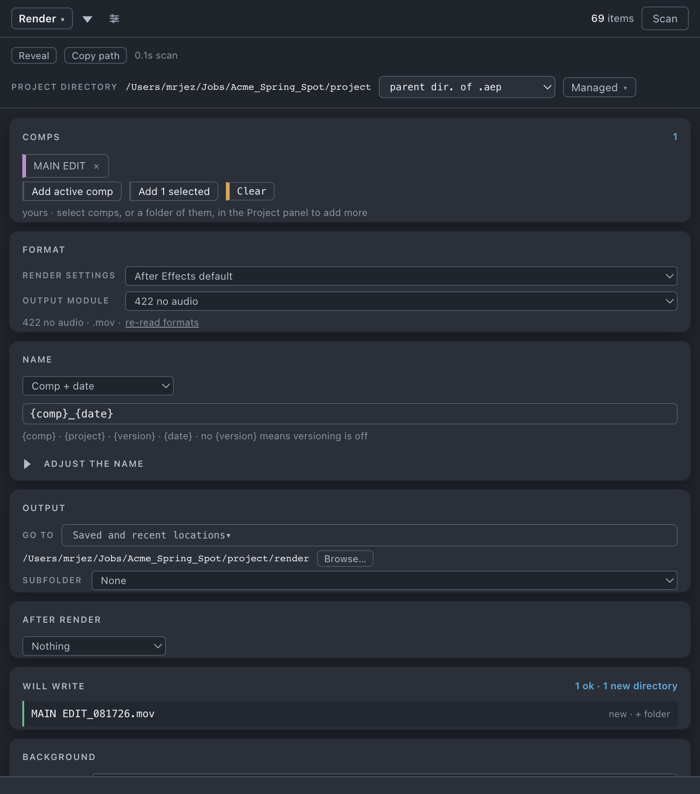

Render
After Effects' render queue with the parts it leaves out — filenames built from tokens, version numbers that count up on their own, a destination it remembers, and a second After Effects doing the rendering while you keep working.
Render is one scrolling page rather than a grid of tiles. You work down it — Comps, Format, Name, Output, After render, Will write — and the two buttons at the bottom are the only things that commit anything.
Press the Render tile; the sheet opens with the sections below. Close puts the grid back — the basket and everything you set stay as they were.

Comps
The basket of comps this render is for.
- Add active comp adds whatever is open in the Viewer.
- Add n selected takes the comps selected in the Project panel; select a folder and it takes every comp under it. With nothing selected it dims rather than disappearing, and says select comps, or a folder of them, in the Project panel.
- Each comp is a chip with an × to remove it. Clear empties the basket.
A line under the buttons says where the basket came from — started from the active comp, yours, cleared, queued — add comps to start another, nothing added yet. The basket is seeded once from the active comp when you open the sheet, and never seeds itself again after you have picked, cleared or queued: your list is yours.
A comp you have since deleted from the project stays in the basket reading (gone) rather than quietly vanishing.
Format
Two dropdowns, both of them After Effects' own template lists on this machine:
- Render settings — the render-settings template. The first option is After Effects default.
- Output module — the output-module template, which is what decides the file format. Under them, a line saying what that template actually writes.
There is no format form here and no shipped preset library. After Effects will not let a script set format, channels, colour or depth on a queue item — those come from the template — so the list is read from your machine rather than authored. With none saved you get No output-module templates on this machine yet, or After Effects has not answered. Set an output module up in After Effects and save it as a template — it appears here.
A template this machine cannot render is shown disabled with the reason in its label — — this machine does not have \<template\>, or — After Effects has not said what \<template\> writes — rather than hidden. Check n formats asks After Effects what the unknown ones write; once everything is known that becomes a re-read formats link, for when you have edited a template in After Effects since.
Name
A dropdown of shortcuts — Comp + version, Comp + date, Project + comp + version, Comp only — that fills the rule field beside it. Type your own and the dropdown reads Custom. The field previews live on every keystroke.
The tokens, as the panel lists them: {comp} · {project} · {version} · {date} · no {version} means versioning is off.
| Token | Expands to |
|---|---|
{comp} | the comp name, after the renaming below has been applied |
{project} | the project filename with .aep stripped |
{version} | v001 — a v and three digits |
{date} | MMDDYY |
A token it does not recognise is left in the name as you typed it and the row says unknown token: \<name\>.
Adjust the name opens the same renaming as Rename — find and replace, add text, case and spacing — applied to {comp} before the name is built. It has one option Rename does not: Remove the version already in the comp name, off by default, which stops MAIN_v2_WIP rendering as MAIN_v2_WIP_v001.mov.
Output
Where the files go. Go to is the shared picker of your saved and recent directories; Browse… is the folder chooser. Use the project appears once you have set a destination by hand and resets it to <project>/render.
Subfolder — None, Comp, Date, or Comp / Date. Comp is always the outer level; there is no date-first option, because a date-outermost folder means tomorrow's version scan looks in a folder created today, finds nothing, and issues v001 over yesterday's v003.
With no destination the panel says which reason it is: no destination — this project's directory is unmanaged, so there is no default render folder; pick one with Browse…, or no destination — save the project or pick one with Browse…
The destination is remembered against the job — stored relative to the project directory when it is inside a managed one, so a project you move keeps rendering into itself. See Set up each project.
After render
Nothing, Import into project, Import & replace usage, or Set as proxy. The line under it is in the future tense on purpose: the render is imported · when it renders, not when it queues · a background render also files it in the template's renders folder (mov/renders in the shipped structure, 01_mov/renders with numbering on). Nothing happens at the moment you press the button; it happens when the file exists.
Alpha interpretation on import is left to After Effects' own guess.
Versioning
There is no versioning section, because there is nothing to set. If the name rule contains {version}, versioning is on; if it does not, it is off.
The rule: the next number is one above the highest that exists — counting both what is on disk and what is already sitting in After Effects' render queue. The queue is the reservation ledger, which is what stops two renders queued back to back from taking the same number.
Each row in Will write says which of three states it is in:
| State | The row reads |
|---|---|
| nothing found | first |
| a previous version found | new |
| the folder could not be read | the row is blocked: the version history could not be read, so the next number is unknown |
Three states, never two. It will not quietly start at v001 when it was unable to look. A directory that simply does not exist yet is not the same thing — that is a first render, and it says first.
Under a Date or Comp / Date subfolder the scan is done from the comp folder and descends into every date folder under it, not from the directory the file lands in.
Two people rendering into one folder see each other's finished files but not each other's queued items.
Will write
The row-by-row answer to "what happens if I press the button". It heads with n ok · n overwrite · n blocked · n new directories, then one line per output file: the path, and a status word — first or new, overwrites, or the blocking reason.
| Reason | Outcome |
|---|---|
| the volume is not mounted | blocked |
| the output directory does not exist | blocked, unless this run is about to create it |
| the output directory could not be read, so what is already there is unknown | blocked |
| n rows resolve to this same path | blocked |
| another output of this comp cannot be written | blocked — if one output of a comp cannot go, none of them do |
| frames of this sequence are already there, and a shorter render would leave old frames behind | overwrite |
| a file of this name is already there | overwrite |
A row can also say the comp name contained a character a path cannot hold, meaning the name was sanitised for you. Whole-plan refusals — no preset chosen, this preset has no outputs, no destination chosen — appear in place of the list.
Queue, or render in background
Two buttons, because they are two different actions.
- Queue n comps adds the plan to After Effects' render queue and stops there. Nothing renders; After Effects' own Render button is one click away. It grows a · create n tail when directories will be created, because that is a write to disk.
- Render n in background does the whole thing in a second After Effects. When a background render is already going it reads Queue n in background and the job waits its turn.
Both dim together when the plan cannot go, and say why rather than dimming silently: n rows must be resolved, nothing to queue, n would overwrite — confirm to continue. That last one puts an overwrite what is there checkbox beside them; tick it and the buttons read Queue anyway · n overwritten. The tick is cleared by any change that could alter which files get overwritten — a different output module, a different subfolder — because consent to overwrite one file is not consent to overwrite another.
Background rendering
Press Render in background and, in order:
- Your project is saved in place.
aerenderopens the.aepfrom disk, so anything unsaved is invisible to it — including the queue items just added. - A copy is made beside the original as
<name>_bg<stamp>.aep. That copy is what renders, so the render is of what you queued rather than of whatever you edit next. - A second After Effects renders it, on its own, while this one stays usable.
Resources decides how much of the machine that second After Effects may take, and each tier prints what it means:
| Tier | What it means |
|---|---|
| Light | up to 25% CPU · image cache 30% · max memory 40% |
| Balanced (default) | up to 50% CPU · image cache 40% · max memory 60% |
| Full | up to 100% CPU · image cache 70% · max memory 90% |
| MFR off | single-frame rendering · image cache 40% · max memory 60% |
Beside it, lower bg priority during render (on by default, so the foreground After Effects wins a contested core) and continue if footage is missing (off). If comps in the basket use missing footage, the panel names them and the two filenames before saying what will happen — with the switch off, if it is in the picture the background render stops there and names the file; with it on, the background render puts colour bars in its place and says nothing.
One background After Effects at a time. Further jobs chain behind the running one and start on their own. They survive the panel being closed and outlive the After Effects that launched them.
The job strip sits at the top of the Render sheet, and under the header when the sheet is closed — a running or waiting job also puts a dot on the Render tile, so it stays visible whatever you are doing. It shows After Effects' own queue — n queued in AE · n rendering · n done — with a Render queue in background button that sends everything ticked in that queue, including items you added by hand. Under it, one row per background job: a waiting job as #n · comps · n frames with Remove; a running one as rendering \<comp\> · 1 of 2 with the frame it is on, a progress bar and Cancel; a failed one with the reason and the path to its log, and Dismiss.
Nothing is automatic. A finished background render waits for you to press the strip's button — Import, Set proxy, or Clear queue, whichever the job's own after-render action calls for. That is deliberate: a render finishing must never change a project you have moved on from. A render finished for a project that is closed waits until it is open again, and jobs belonging to another project say so: n background render jobs belong to \<names\> — they import when it is open.
Cancelling stops the render. Anything already finished stays. A part-written movie is offered for deletion in a card — An unfinished movie does not play, and left in the folder it takes the next version number. Deleting happens on disk — After Effects cannot undo it. — with Keep and Delete n files. A part-written sequence is kept: those are real frames, and you can resume with After Effects' Skip existing files.
Things you might not think to do
- Version up without touching any name. Leave
{version}in the rule and press the button. It reads what is on disk and what is queued, and takes the next number. - Send After Effects' whole existing queue to a background instance in one press — including items you queued by hand — with Render queue in background on the strip.
- Queue several background jobs and walk away. They chain in order on their own and survive the panel and the launching After Effects being closed.
- Cancel a sequence render mid-way and pick it up later without burning a version number. The frames are kept, and the only thing cancelling offers to delete is an unfinished movie — precisely so it does not sit in the folder holding a number.
- Render a client's spec from a comp whose name carries your own versioning. Remove the version already in the comp name, plus
{version}in the rule. - Render into a dated folder per comp, every day, without collisions. Subfolder: Comp / Date. The version scan deliberately looks above the date folder.
- Have the finished render come back as its comp's proxy. After render: Set as proxy, fired when it renders.
Watch out
Pairs with
Set up each project for the render destination, Managed and what it changes here. Set up once for the saved locations Go to reads. Import assets shares that same store.